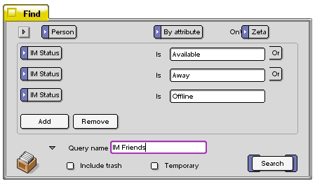
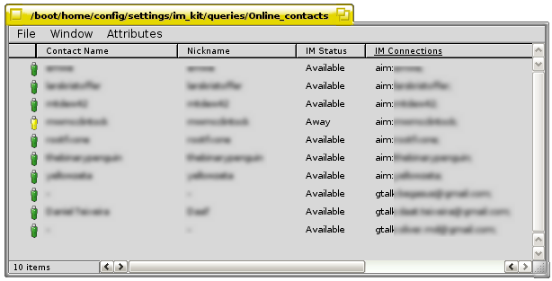

The Instant Messenger
Queries
The Instant Messenger kit makes use of queries and attributes. You can easily create your own queries for this chat solution, and use them as your buddy lists.
Go to the Deskbar and choose Find, or hit + in a Tracker related window or after first having clicked on the desktop.
In the Query application, choose what file type you want to be searched after by clicking on the pop-down menu All files and folders. In this pop-down menu, first choose application, and from the application's sub-menu, choose Person.
The Query we want to do, is related to the Person files. Choose By attribute from the pop-down menu Name and then that you only want to do the Query on your boot partition (here: Zeta). If you have other BeOS systems on the computer, you can choose All disks.
As you set the Query type to attribute, a new pop-down menu appears and you can choose between all attributes related to that file type. In the bottom of this menu, you will find the attributes that you made when installing the Instant Messenger kit, IM Connections and IM Status. Choose IM Status, and specify the query to be exact (Is). The exact words that we want to do a query on are Available, Away and Offline, and will show us all our friends that are using one of the supported IM protocols.

To get the query correct, each IM Status have to be separated with Or (instead of the default And).

If you find this query useful, you can save it for later use by giving it a name and dragging the query icon to the desktop or add them to /boot/home/config/settings/im_kit/Queries. If you add your saved queries to this folder, they will be accessable from the im_kit's replicant in the Deskbar.

The Live Queries are system wide and can be seen in a various of applications making use of the People files and in the operating system it self. In the Recent applications you can also see with who you recently had a chat with and the online status they have now, and start a new chat with them.
im_contactlist
The cola-coder has made an quite so useful replacement for live queries over online contacts, the im_contactlist. im_contactlist is a specialized attribute reader, only reading the specific im attributes: Icon, name and status. Your contacts can be sorted after these three attributes. Buddies can also be sorted after the People specific attribute Groups. This is done by enabling Show Groups in the Attributes menu.
The tool shows the status of all your contacts. All online contacts are listed in green with an icon highlighted indicating the protocols your buddies are using. Buddies that are online, but away, are listed in yellow. Offline buddies are by default not listed, but this can be changed by enabling Show Offline Contacts. These buddy entries will then be listed with a transparent protocol icon and with their buddy names in red. The showing of offline contacts can of course at any time be turned of again.
In the bottom of the window, all five supported protocols are listed. The protocols that you are available for chats with are highlighted.
Double-clicking a listed online buddy will activate your default chat client, so that you can start chatting with your contact, and if you right-click on a contact a context menu will appear. You can also Start Conversation from this menu, send an e-mail if the contact is not online, visit his/her web page and edit the person's contact information. If there is a need for it, you can prevent a person from seeing when you are online by blocking him/her, and then also deleting the person's People file.